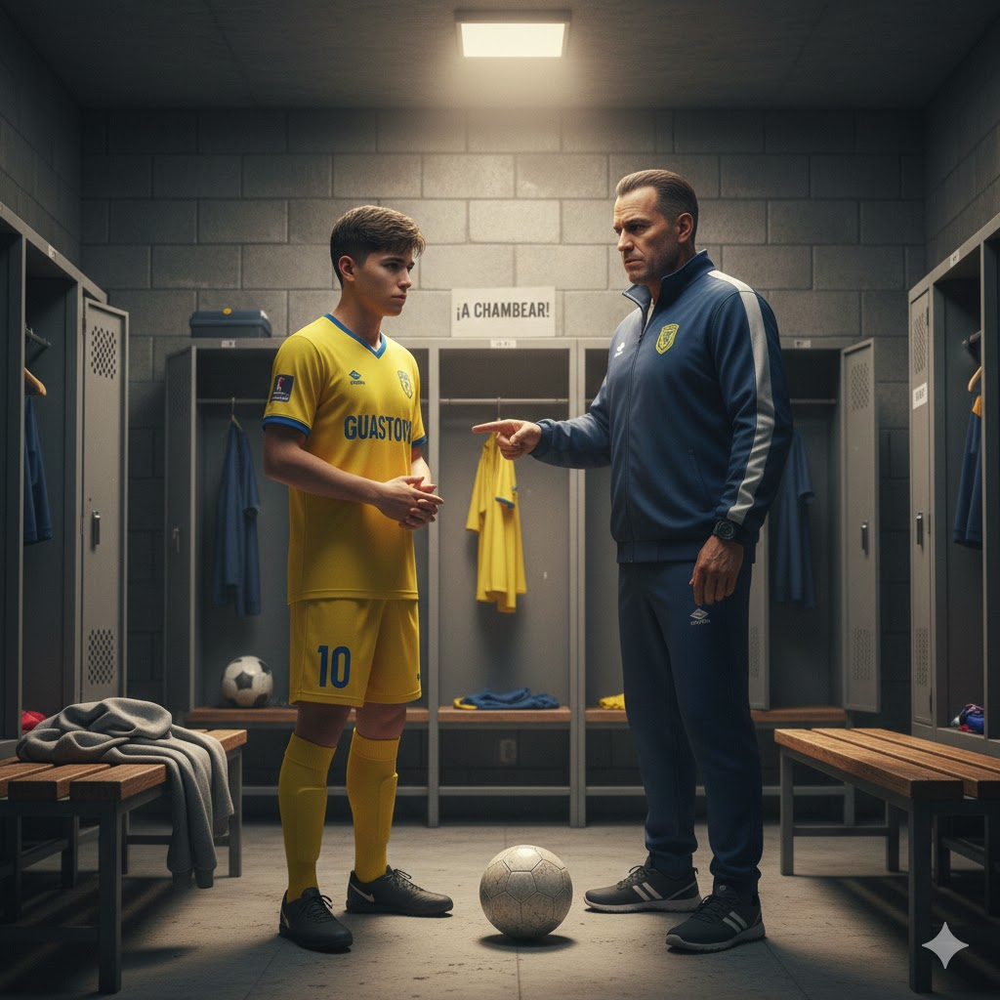

Llegás y decís la verdad: te confiaste y preferiste irte de fiesta a descansar por ser un niño rebelde. El DT se queda serio. Luego te dice: "te voy a dar una más, pero la última."
Vos respirás y pensás: "va, ahora sí, a chambear."
Te ponen a prueba: partido de reserva para ganarte el puesto y ver si eres capaz de lo que tanto presumias.
Me mato corriendo y saco el partido con asistencia y gol